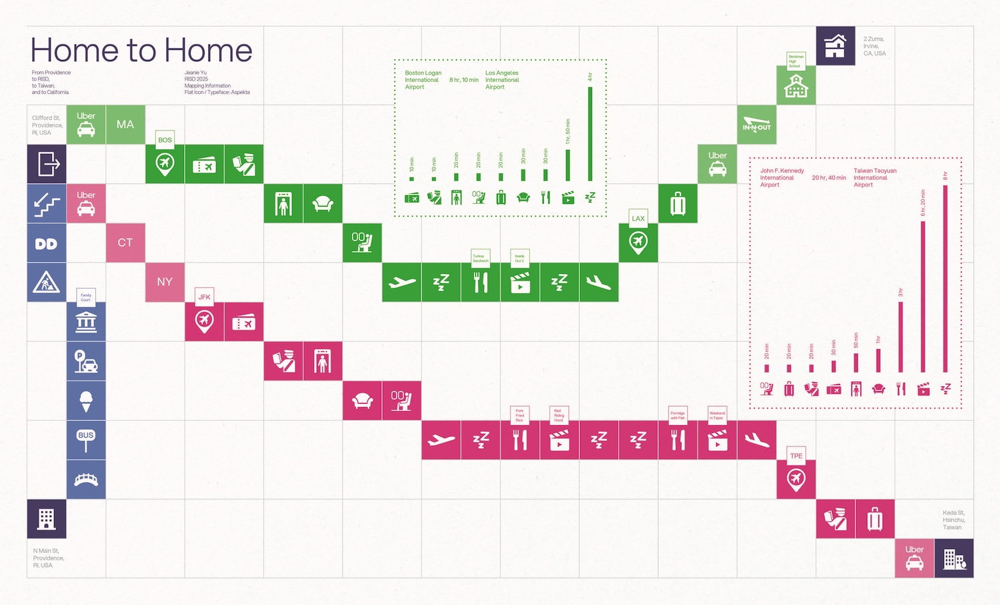

This piece uses storytelling with data to map my journeys between my homes in Providence, Rhode Island; Irvine, California; and Hsinchu, Taiwan, to the Design Center at Rhode Island School of Design. Inspired by a chessboard layout, each square represents a movement, action, or location along the route, turning travel information into a visual narrative.
